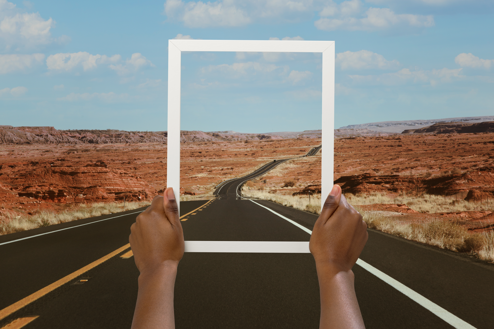

Welcome to my blog post about the exciting world of exploring and discovering. In this article, we will explore the joy and challenges of stepping into the unknown, finding new paths and seeing the world with fresh eyes.
My journey into exploring began with a simple curiosity about what was beeyond the next hill. Little did I know that this curiosity would lead me down a path of endless discovery and wonder.
Just like the winding road in the photo below, every turn brought a new view I had never seen before

Exploring is not always easy. There are steep climbs, unexpected turns and moments when you feel lost. There are new places to learn about, cultures to understand and challenges to overcome.
However, the feeeling of accomplishment when you finally reach a beautiful viewpoint or discover a hidden place is unmatched
As the world continues to open up, so does the field of exploring. From mountain trails to new cities, there is always something new and exciting to discover and experience
Whether you are just starting out or you are a seasoned traveller, the world of discovery offers endless opportunities for growth and adventure. So, keep exploring, keep discovering and most importantly enjoy the journey!